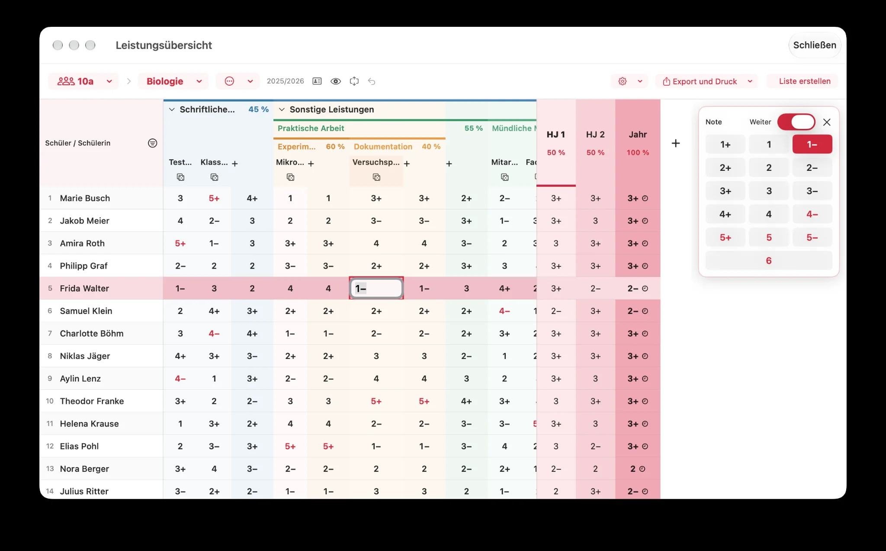

Leistungsbäume nach deinem Unterricht
Lege Bereiche und Unterbereiche auf bis zu drei Ebenen an – etwa schriftliche Leistungen, mündliche Mitarbeit, praktische Arbeiten oder Projekte.
Von der spontanen mündlichen Mitarbeit bis zur Klassenarbeit: Erfasse Leistungen dort, wo du deine Klassen und Sitzpläne ohnehin verwaltest.

Lege Bereiche und Unterbereiche auf bis zu drei Ebenen an – etwa schriftliche Leistungen, mündliche Mitarbeit, praktische Arbeiten oder Projekte.
Gewichte Haupt- und Unterbereiche individuell. Die gewichteten Ergebnisse fließen in die Halbjahres- und Jahresnoten ein.
Erfasse Leistungen in der Tabelle, nutze Noten mit +/− und wechsle mit „Weiter“ bequem zum nächsten Schüler.
Sieh berechnete Noten für das erste und zweite Halbjahr sowie das Schuljahr; bei Bedarf kannst du Ergebnisse manuell überschreiben oder Abschlüsse wieder öffnen.
Nutze Leistungsstatistiken, Notenspiegel, Checklisten und die Zufallsauswahl direkt im Zusammenhang mit deiner Klasse.
Die vollständige App-Datensicherung enthält auch Notenbücher. Schütze Exporte vor fremdem Zugriff, besonders wenn sie unverschlüsselt sind.